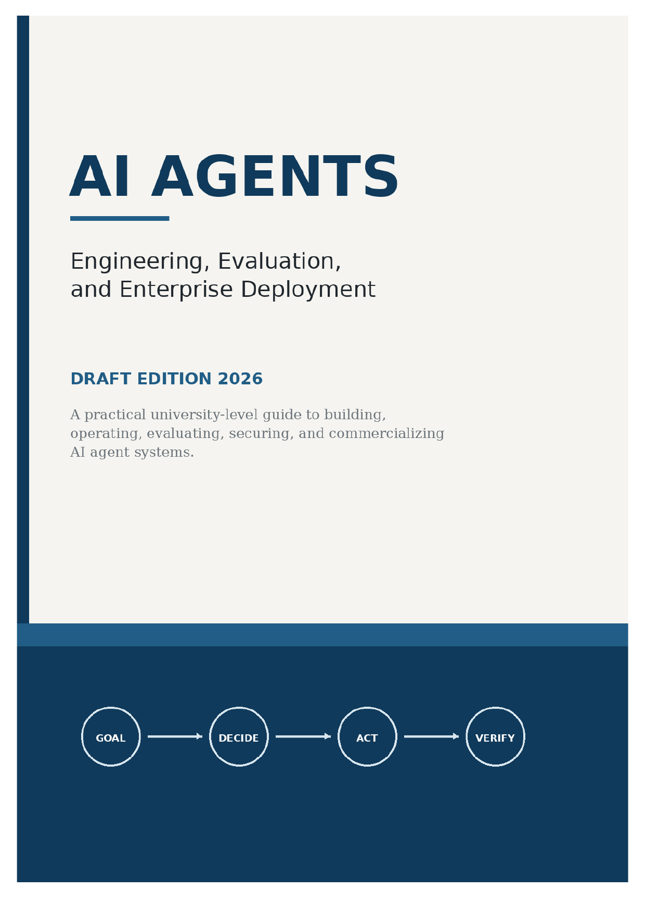

AI Systems & Infrastructure · Axiologic Research Editions
AI Agents
Engineering, Evaluation, and Enterprise Deployment
A practical guide to agent loops, tools, memory, evaluation, and operations—designed for systems that can pursue useful outcomes while remaining observable, bounded, and accountable.
From answers to accountable action
An agent is not merely a chat interface with tools. It is a system that turns goals into a controlled sequence of planning, action, observation, revision, and stopping. This book maps the engineering decisions that make that sequence useful in real organizations.
State, tools, and evaluation
It examines retrieval, memory, tool contracts, permissions, durable execution, multi-agent handoffs, and the evidence needed to distinguish a plausible demonstration from reliable work. Evaluation is treated as an operational practice, not a final benchmark score.
Delegation becomes trustworthy when an action can be reconstructed, challenged, and stopped.
Deployment with boundaries
The final focus is enterprise operation: observability, budgets, approval points, incident response, and the human roles that remain responsible for a system’s consequences.